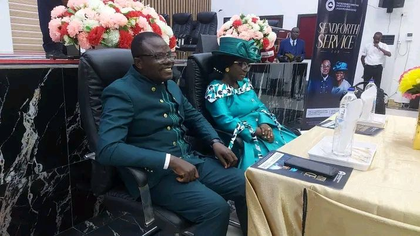

Every parish under Lagos Province 17 stands on the same foundation: the character of God does not change with the seasons of life. That conviction shapes how we worship, how we disciple, and how we care for one another — from the newest visitor to the most senior member of the province.
As a provincial headquarters, River of Life Parish carries a special responsibility to model that consistency — in our services, our ministries, and our leadership — for every parish family across Lagos Province 17.

Before leading Lagos Province 17, Pastor Thompson Olulade served as pioneer PICP of RCCG Lagos Province 123. On 12th July 2026, the province held a send-forth service in his honour, celebrating him and Pastor (Mrs) Folake Olulade as they were sent forth to their new assignment leading LP17.
Together, they now shepherd a province-wide family of parishes, ministries and fellowships — carrying the same motto that defines this house: Jesus Christ, the same yesterday, and today, and forever.